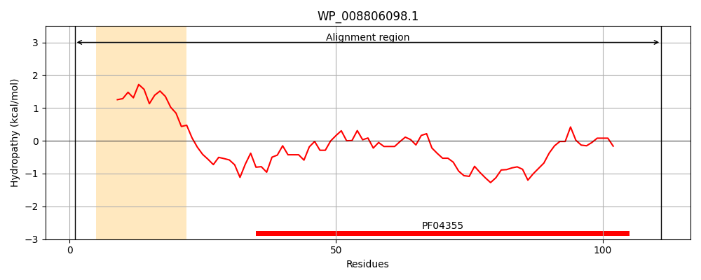
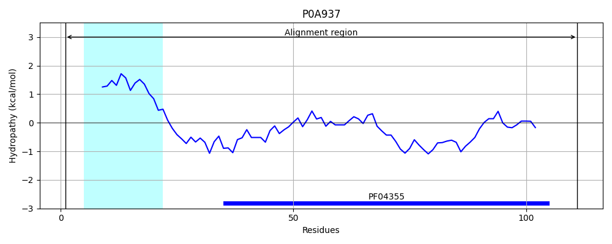
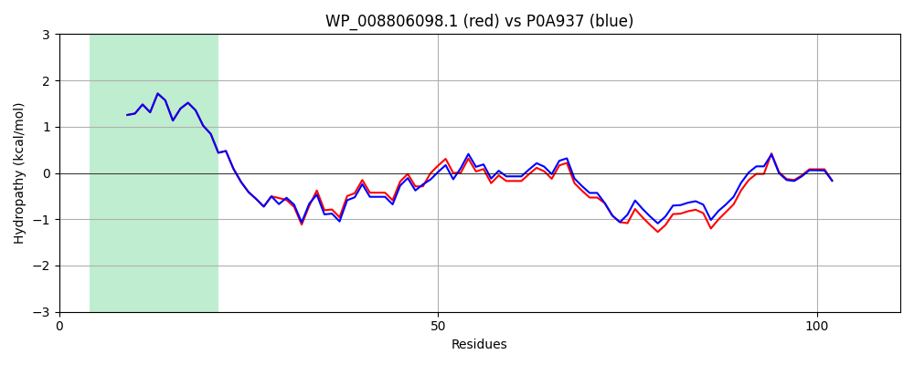

Hit Accession: P0A937
Hit TCID: 1.B.33.1.3
Hit Description: gnl|BL_ORD_ID|8628 gnl|TC-DB|P0A937|1.B.33.1.3 Small protein A - Escherichia coli (strain K12).
Mach Len: 111
e:0.000000
Query TMS Count : 1
Hit TMS Count: 1
TMS-Overlap Score: 0.900000
Predicted Substrates:CHEBI:8526;protein polypeptide chain
BLAST Alignment:
| Protein Hydropathy Plots: | |
|---|---|
|  |  |
Pairwise Alignment-Hydropathy Plot: | |
|  | |